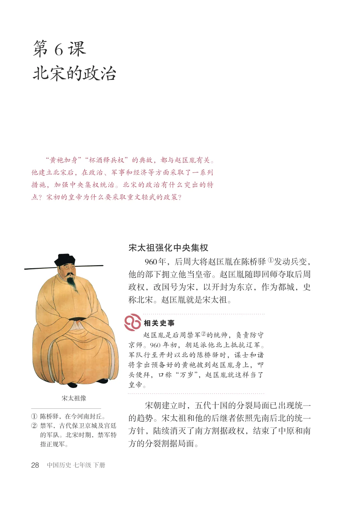
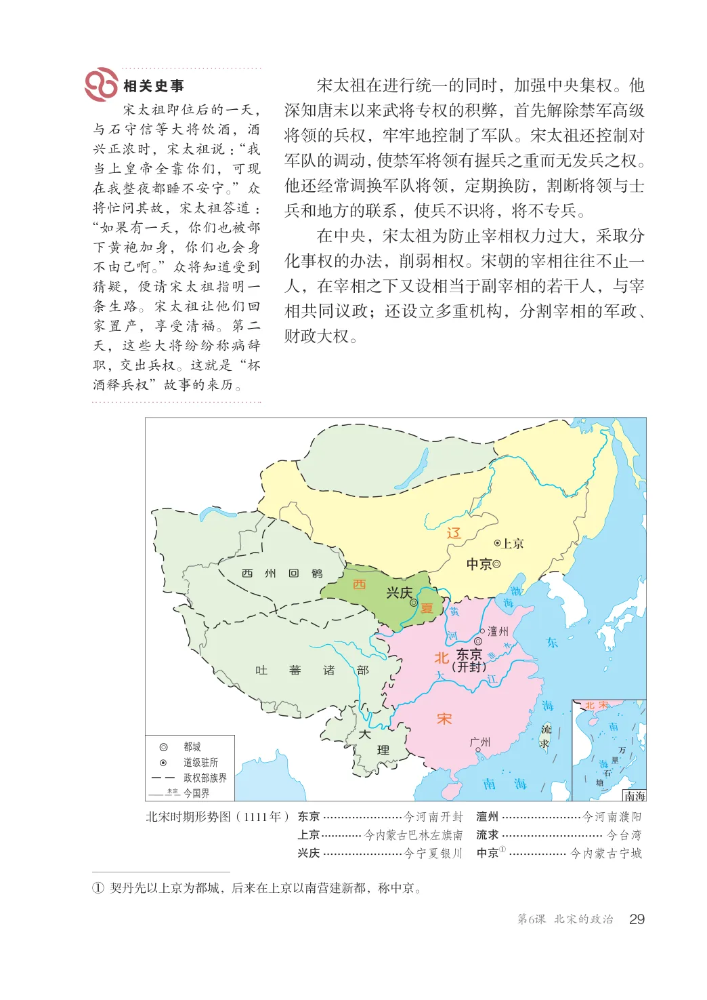
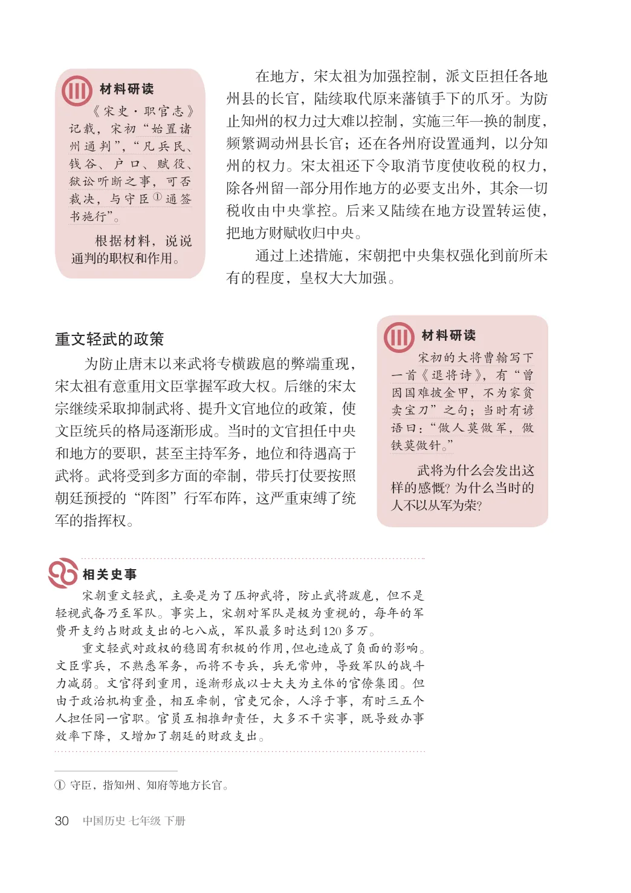
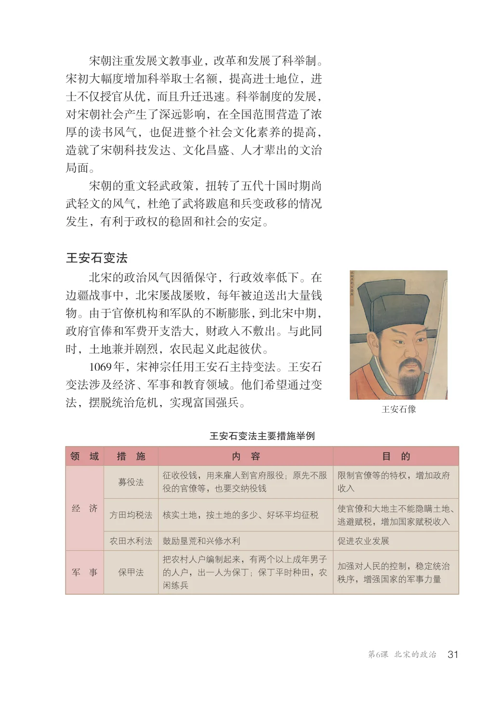
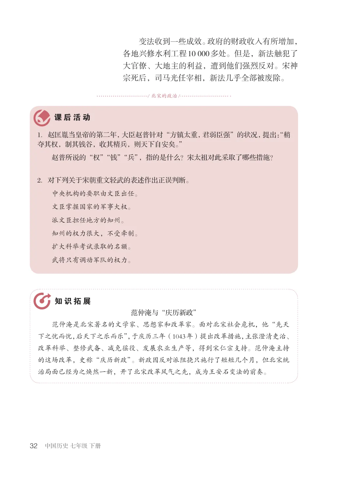

第2单元 · 教材第 28–32 页
第6课 北宋的政治
文字版依据教材 PDF 文本层整理；复杂地图、图表及版面关系请以右侧教材原页为准。
“黄袍加身”“杯酒释兵权”的典故，都与赵匡胤有关。他建立北宋后，在政治、军事和经济等方面采取了一系列措施，加强中央集权统治。北宋的政治有什么突出的特点？宋初的皇帝为什么要采取重文轻武的政策？
宋太祖强化中央集权
960年，后周大将赵匡胤在陈桥驿①发动兵变，他的部下拥立他当皇帝。赵匡胤随即回师夺取后周政权，改国号为宋，以开封为东京，作为都城，史称北宋。赵匡胤就是宋太祖。
赵匡胤是后周禁军②的统帅，负责防守京师。960年初，朝廷派他北上抵抗辽军。军队行至开封以北的陈桥驿时，谋士和诸将拿出预备好的黄袍披到赵匡胤身上，叩头便拜，口称“万岁”，赵匡胤就这样当了皇帝。
宋太祖像
宋朝建立时，五代十国的分裂局面已出现统一的趋势。宋太祖和他的后继者依照先南后北的统一方针，陆续消灭了南方割据政权，结束了中原和南方的分裂割据局面。
①陈桥驿，在今河南封丘。②禁军，古代保卫京城及宫廷
的军队。北宋时期，禁军特指正规军。

宋太祖在进行统一的同时，加强中央集权。他深知唐末以来武将专权的积弊，首先解除禁军高级将领的兵权，牢牢地控制了军队。宋太祖还控制对军队的调动，使禁军将领有握兵之重而无发兵之权。他还经常调换军队将领，定期换防，割断将领与士兵和地方的联系，使兵不识将，将不专兵。在中央，宋太祖为防止宰相权力过大，采取分化事权的办法，削弱相权。宋朝的宰相往往不止一人，在宰相之下又设相当于副宰相的若干人，与宰相共同议政；还设立多重机构，分割宰相的军政、财政大权。
宋太祖即位后的一天，与石守信等大将饮酒，酒兴正浓时，宋太祖说：“我当上皇帝全靠你们，可现在我整夜都睡不安宁。”众将忙问其故，宋太祖答道：“如果有一天，你们也被部下黄袍加身，你们也会身不由己啊。”众将知道受到猜疑，便请宋太祖指明一条生路。宋太祖让他们回家置产，享受清福。第二天，这些大将纷纷称病辞职，交出兵权。这就是“杯酒释兵权”故事的来历。
辽
中京
西州回鹘
兴庆
东京
北
江大（开封）
吐蕃诸部
宋
道级驻所
政权部族界
海南
未定南海
北宋时期形势图（1111年）澶州......................今河南濮阳
东京......................今河南开封
上京............今内蒙古巴林左旗南
流求............................ 今台湾
兴庆......................今宁夏银川
①................ 今内蒙古宁城
①契丹先以上京为都城，后来在上京以南营建新都，称中京。

在地方，宋太祖为加强控制，派文臣担任各地州县的长官，陆续取代原来藩镇手下的爪牙。为防止知州的权力过大难以控制，实施三年一换的制度，频繁调动州县长官；还在各州府设置通判，以分知州的权力。宋太祖还下令取消节度使收税的权力，除各州留一部分用作地方的必要支出外，其余一切税收由中央掌控。后来又陆续在地方设置转运使，把地方财赋收归中央。通过上述措施，宋朝把中央集权强化到前所未有的程度，皇权大大加强。
《宋史·职官志》记载，宋初“始置诸州通判”，“凡兵民、钱谷、户口、赋役、狱讼听断之事，可否裁决，与守臣①通签书施行”。根据材料，说说通判的职权和作用。
重文轻武的政策
宋初的大将曹翰写下一首《退将诗》，有“曾因国难披金甲，不为家贫卖宝刀”之句；当时有谚语曰：“做人莫做军，做铁莫做针。”武将为什么会发出这样的感慨？为什么当时的人不以从军为荣？
为防止唐末以来武将专横跋扈的弊端重现，宋太祖有意重用文臣掌握军政大权。后继的宋太宗继续采取抑制武将、提升文官地位的政策，使文臣统兵的格局逐渐形成。当时的文官担任中央和地方的要职，甚至主持军务，地位和待遇高于武将。武将受到多方面的牵制，带兵打仗要按照朝廷预授的“阵图”行军布阵，这严重束缚了统军的指挥权。
宋朝重文轻武，主要是为了压抑武将，防止武将跋扈，但不是轻视武备乃至军队。事实上，宋朝对军队是极为重视的，每年的军费开支约占财政支出的七八成，军队最多时达到120多万。重文轻武对政权的稳固有积极的作用，但也造成了负面的影响。文臣掌兵，不熟悉军务，而将不专兵，兵无常帅，导致军队的战斗力减弱。文官得到重用，逐渐形成以士大夫为主体的官僚集团。但由于政治机构重叠，相互牵制，官吏冗余，人浮于事，有时三五个人担任同一官职。官员互相推卸责任，大多不干实事，既导致办事效率下降，又增加了朝廷的财政支出。
①守臣，指知州、知府等地方长官。

宋朝注重发展文教事业，改革和发展了科举制。宋初大幅度增加科举取士名额，提高进士地位，进士不仅授官从优，而且升迁迅速。科举制度的发展，对宋朝社会产生了深远影响，在全国范围营造了浓厚的读书风气，也促进整个社会文化素养的提高，造就了宋朝科技发达、文化昌盛、人才辈出的文治局面。宋朝的重文轻武政策，扭转了五代十国时期尚武轻文的风气，杜绝了武将跋扈和兵变政移的情况发生，有利于政权的稳固和社会的安定。
王安石变法
北宋的政治风气因循保守，行政效率低下。在边疆战事中，北宋屡战屡败，每年被迫送出大量钱物。由于官僚机构和军队的不断膨胀，到北宋中期，政府官俸和军费开支浩大，财政入不敷出。与此同时，土地兼并剧烈，农民起义此起彼伏。1069年，宋神宗任用王安石主持变法。王安石变法涉及经济、军事和教育领域。他们希望通过变法，摆脱统治危机，实现富国强兵。
王安石像
王安石变法主要措施举例领域措施内容目的
募役法征收役钱，用来雇人到官府服役；原先不服役的官僚等，也要交纳役钱
限制官僚等的特权，增加政府收入
方田均税法核实土地，按土地的多少、好坏平均征税使官僚和大地主不能隐瞒土地、逃避赋税，增加国家赋税收入
农田水利法鼓励垦荒和兴修水利促进农业发展
把农村人户编制起来，有两个以上成年男子的人户，出一人为保丁；保丁平时种田，农闲练兵
加强对人民的控制，稳定统治秩序，增强国家的军事力量
军事保甲法

变法收到一些成效。政府的财政收入有所增加，各地兴修水利工程10000多处。但是，新法触犯了大官僚、大地主的利益，遭到他们强烈反对。宋神宗死后，司马光任宰相，新法几乎全部被废除。
/ 北宋的政治/
1．赵匡胤当皇帝的第二年，大臣赵普针对“方镇太重，君弱臣强”的状况，提出：“稍夺其权，制其钱谷，收其精兵，则天下自安矣。”
赵普所说的“权”“钱”“兵”，指的是什么？宋太祖对此采取了哪些措施？
2．对下列关于宋朝重文轻武的表述作出正误判断。
中央机构的要职由文臣出任。文臣掌握国家的军事大权。派文臣担任地方的知州。知州的权力很大，不受牵制。扩大科举考试录取的名额。武将只有调动军队的权力。
范仲淹与“庆历新政”范仲淹是北宋著名的文学家、思想家和改革家。面对北宋社会危机，他“先天下之忧而忧，后天下之乐而乐”，于庆历三年（1043年）提出改革措施，主张澄清吏治、改革科举、整修武备、减免徭役、发展农业生产等，得到宋仁宗支持。范仲淹主持的这场改革，史称“庆历新政”。新政因反对派阻挠只施行了短短几个月，但北宋统治局面已经为之焕然一新，开了北宋改革风气之先，成为王安石变法的前奏。
